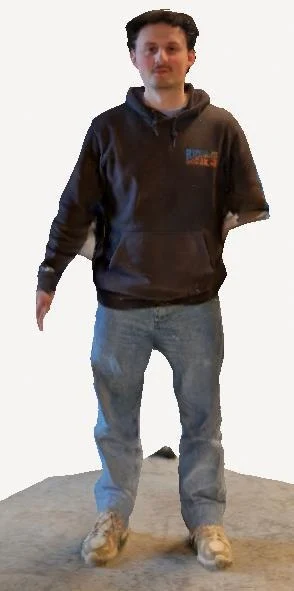

Interaction · Python & Unity
Walking in Place
Transformer les mouvements des jambes filmés en déplacement dans une scène Unity.
Découvrir le projetPORTFOLIO / ARNAUD CARBONNEL
De la création numérique à la gestion de projet, je donne forme aux idées et aux expériences.
Un aperçu de mon univers.Survole une catégorie pour changer de projet.Touche une catégorie pour changer de projet.
01 / QUELQUES RÉALISATIONS

STAGE DE FIN D’ÉTUDES · 6 MOIS AU LIRMM
Du hub immersif à l’atelier Climate City : concevoir un parcours éducatif et y intégrer un assistant vocal.
Découvrir le projet LIRMM
Interaction · Python & Unity
Transformer les mouvements des jambes filmés en déplacement dans une scène Unity.
Découvrir le projet
Vidéo 360° · Unity · Gestion de projet
Chef de projet : relation entreprise / équipe, cahier des charges, développement de l’application et suivi.
Découvrir le projet
Recherche · Coauteur · SAGIP 2026
Étudier comment l’introduction progressive d’un robot collaboratif influence l’expérience des opérateurs.
Découvrir l’étude02 / MES RUBRIQUES
Concevoir une expérience, porter un projet, explorer une question : découvre les différentes facettes de mon travail.
En savoir plus sur mon parcours3D, réalité augmentée et expériences interactives.
Le contexte, le travail d’équipe et le parcours des réalisations.
Études scientifiques, expérimentation et articles collectifs.
Tester. Apprendre. Créer. Mes projets personnels.
03 / EXPLORATIONS
De la numérisation 3D à la création de ce portfolio, mes explorations donnent une place aux essais, aux difficultés et aux apprentissages.
Parcourir les explorations ↗
ET LA SUITE ?
Une opportunité, un projet ou simplement une question.